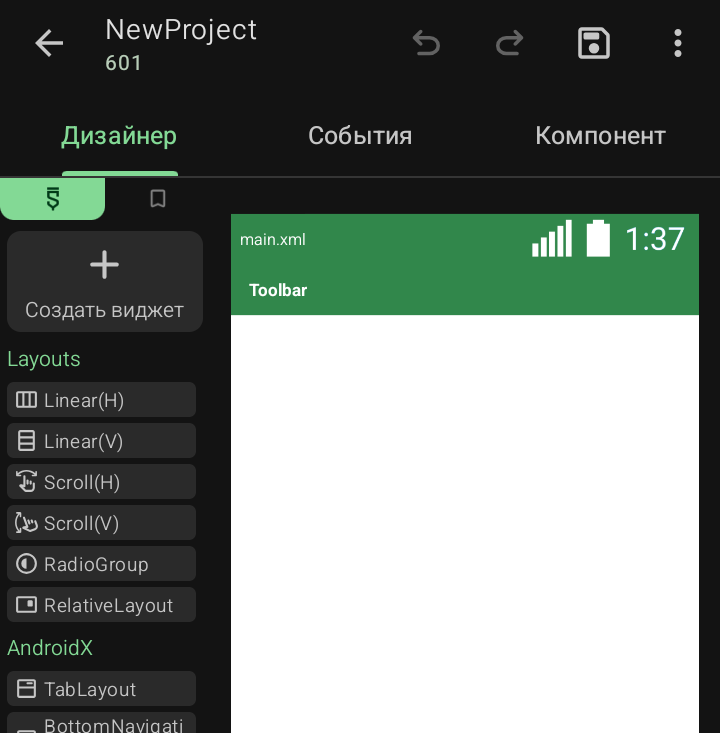
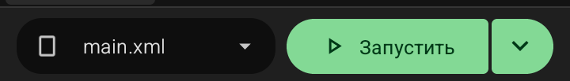

Сразу после тапа по кнопке «Создать» Sketchware Pro 7 выполняет несколько шагов и автоматически открывает рабочий экран проекта. Разберём, что именно происходит в этот момент и что ты видишь на экране.
Что происходит технически
Sketchware выполняет создание проекта в несколько этапов:
· Создаёт структуру папок проекта в рабочей директории. У каждой папки — свой номер (например, 601), который виден под именем проекта в шапке.
· Генерирует базовые файлы: AndroidManifest.xml, MainActivity.java, main.xml, strings.xml, colors.xml, styles.xml. Это скелет, на котором будет строиться приложение.
· Применяет тему — пять цветов из палитры попадают в colors.xml, а через ссылки — в styles.xml и AndroidManifest.xml.
· Записывает метаданные: имя приложения, имя пакета, имя проекта, код и имя версии, иконку.
· Регистрирует проект в общем списке — теперь он появится на главном экране Sketchware в списке проектов.
Что ты видишь после создания
Открывается рабочий экран проекта. Сверху вниз:

·
Шапка (тулбар)
— слева стрелка назад, имя проекта NewProject и номер 601 под ним. Справа — три иконки: «Отменить», «Повторить», «Сохранить», и кнопка меню ⋮.
·
Три вкладки под шапкой:
«Дизайнер», «События», «Компонент». Активна первая — Дизайнер.
·
Левая панель
— палитра виджетов с категориями: Layouts, AndroidX, Widgets и другими. Сверху — кнопка «+ Создать виджет».
·
Центральная область
— макет main.xml с уже добавленным Toolbar (зелёная шапка). Это предпросмотр того, как будет выглядеть первый экран приложения.
·
Нижняя панель

слева селектор текущего файла макета main.xml с выпадающим списком,
по центру — кнопка «▶ Запустить»
для сборки и теста, справа — стрелка вниз для дополнительных действий.
Что уже готово «из коробки»
Sketchware сразу создаёт минимальный рабочий каркас:
· Один экран — MainActivity. В будущем можно добавить ещё экраны через менеджер представлений.
· Один макет — main.xml. Это разметка первого экрана.
· Один Toolbar — зелёная шапка сверху. Уже вставлена в макет.
· Файл логики — событие onCreate уже есть у MainActivity, но блоков внутри пока нет.
Это значит, что если сразу нажать «Запустить» — приложение соберётся и откроется, но будет содержать только пустой экран с зелёной шапкой. Никакой логики, никаких кнопок.
💡 Совет: не добавляй ничего сразу. Первое, что стоит сделать — открыть менеджер представлений и убедиться, что имя пакета, версии и тема применились так, как ты хотел. Исправить это позже сложнее.
Что дальше
· Дизайнер — сюда ты будешь добавлять виджеты (TextView, Button, ImageView и другие) и настраивать их свойства.
· События — здесь на блочном полотне описывается логика: что происходит при нажатии кнопки, при старте экрана, при получении данных.
· Компонент — здесь подключаются невидимые сервисы: интернет, база данных, камера, звук, реклама.
С этих трёх вкладок начинается вся работа над приложением.
⚠️ Важно: не запускай сборку APK сразу после создания проекта. Сначала убедись, что имя пакета корректно (латиница, точки, формат com.имя.проект), иначе первая же установка может конфликтовать с другим приложением.